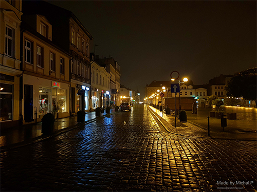
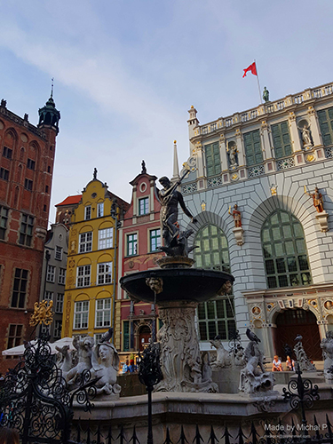
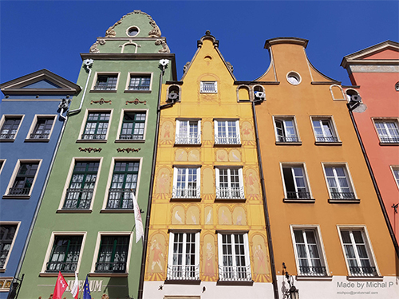
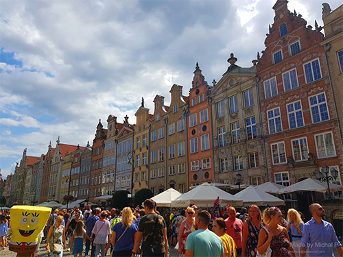
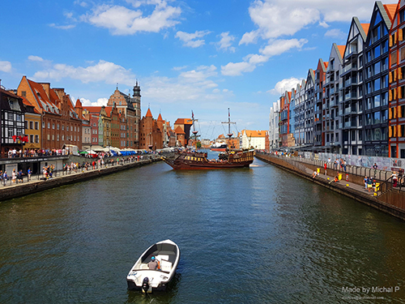

Poland 
Inowrocław, August 2019 - After a visit in the Baltic Sea, I travelled to my home town to see what changed and visit the relatives there.
Gdańsk, Sopot, Sztutowo, August 2019 - Recently, I've been to North of Poland where I've seen bigger cities like Gdańsk and Sopot. There I went to see Westerplatte where one of the very first battles of WWII happen, but also Żuraw, the biggest medieval crane. After a ride in a pirate ship, I've visited pier in Sopot and later I travelled to Sztutowo to see the Stutthof Concentration Camp.
Kraków, April 2018 - I've visited Kraków on educational trip, with the main purpose to go and visit concentration camp Auschwitz. Following that, we took a tour guide around Kraków to visit the Cathedral and find out more about the city. During the evening, I had one of the best times in the Cuban bar "La Havana", definitely recommend :)
Inowrocław, November 2017 - I travelled to Poland to my home town Inowrocław for the day of "Wszystkich Świętych" or in english "All Saints Day".
Warsaw, August 2010 - I've been in the capital of Poland only once in 2010 when I was coming back from holidays where I had to transfer from the plane onto the train.
Darłówko, August 2009 - My first time visiting Baltic Sea was in 2009 in small town Darłówko. After days in the sea, we visited Stone Gate (and the main square) in the bigger city Darłowo as well as try the famous Kręciołki ice creams.
- 
- 
- 
- 
- 